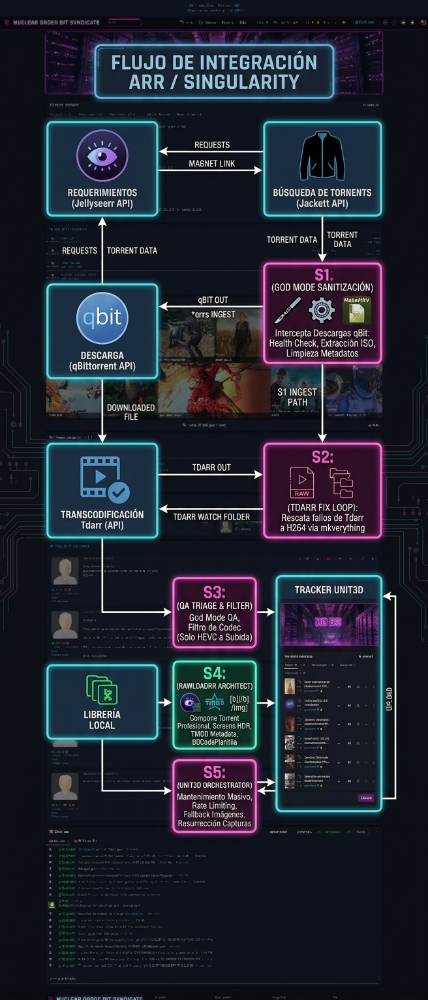
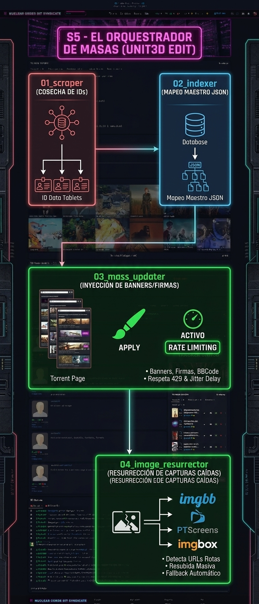

Integración de Singularity con el Ecosistema Arr
Bienvenido a la sección más práctica de esta wiki. Aquí vamos a ver cómo encaja Singularity en un flujo de trabajo real junto a Radarr, Sonarr y qBittorrent. El objetivo es sencillo: que tu biblioteca esté limpia, verificada, en el codec correcto y compartida en el tracker de forma consistente y sin intervención manual constante.
Esta guía está pensada para usuarios que ya tienen su stack Arr funcionando y quieren darle un salto de calidad a su gestión de medios.
El Flujo Maestro
El siguiente diagrama muestra cómo fluye el contenido desde una petición de descarga hasta que acaba publicado y catalogado en el tracker. Singularity actúa en las etapas intermedias y finales, haciendo el trabajo pesado que los Arrs no pueden ni deben hacer.

El flujo se divide en seis etapas clave, numeradas de S1 a S5 más una etapa auxiliar S6. Ninguna de ellas es automática en el sentido de que se dispare sola sin tu intervención: Singularity es una herramienta de invocación manual. Escribes singularity en la terminal, eliges qué quieres hacer, y el programa se encarga del resto hasta el final, generando informes si algo falla.
Dos pipelines, una suite
Antes de entrar en detalle con cada etapa, conviene entender la arquitectura del programa para no perderse.
MKVerything tiene dos modos de operación:
- God Mode (
[5]en el launcher de MKVerything): pipeline completo con análisis frame a frame, decodificación real del contenido, limpieza profunda de metadatos, subtítulos y adjuntos. Es lento, es exhaustivo, y es el que debe pasar al menos una vez por cada archivo de tu biblioteca. - Goddess Mode (
[6]en el launcher de MKVerything): chequeo estructural rápido sin decodificación. Detecta problemas de contenedor, cabeceras rotas y formatos incorrectos, pero no analiza el interior del stream. Es el modo del día a día en bibliotecas ya saneadas.
Estos dos modos son la base de los dos pipelines SINGULARIDAD del menú principal:
[5] SINGULARIDAD (God Mode): ejecuta el flujo completo de S1 a S5 utilizando el God Mode de MKVerything en la Fase 1. Tarda más, pero es el más seguro.[6] SINGULARIDAD (Goddess Mode): ejecuta el mismo flujo pero con el Goddess Mode en la Fase 1. Para bibliotecas ya trabajadas donde confías en el estado del contenido.
La clave está en cuándo usar cada pipeline:
- S1 y S2 (sanear archivos antes de compartir) → se usa directamente MKVerything desde el menú
[1]. No se toca nada del tracker, no se sube nada. Solo quirófano local. - S3 a S5 (triaje, subida y mantenimiento del tracker) → se usa el pipeline SINGULARIDAD completo desde
[5]o[6], que además engloba internamente las fases de MKVerything.
S1: Pre-Ingesta con MKVerything
Esta etapa ocurre después de que qBittorrent termina de descargar y antes de que Radarr o Sonarr importen el archivo a tu biblioteca definitiva.
El problema que resuelve es simple: los Arrs confían ciegamente en que el archivo que reciben es correcto. Si ese archivo está corrupto, tiene metadatos basura, subtítulos incrustados de forma incorrecta, adjuntos innecesarios, o era en realidad un MPEG4 disfrazado de MKV, lo van a importar tal cual y el problema quedará enterrado en tu biblioteca.
MKVerything intercepta ese archivo antes de que eso ocurra.

Cómo lanzarlo
- Escribe
singularityen cualquier terminal. - En el menú principal, elige
[1] MKVerything (Auditoría y Spam). - Dentro del submenú, selecciona
[1.1] Lanzador (todos los modos).
[1.1] Lanzador (todos los modos)
[1.2] Ajustes / Dependencias
[1.3] Testeo rápido de herramientas
[b] Atrás
- El launcher de MKVerything se abrirá con su propio menú:
[1] ⚖️ AUDITORÍA DE CAMPO (Recursivo + Informe de Bajas)
[2] 🚑 Rescatar MKVs Rotos (Lista/Ruta)
[3] 🎞️ Convertir Legacy (AVI/MP4 -> MKV)
[4] 📦 Extraer ISOs (MakeMKV)
[5] ⚡ GOD MODE (Extracción + Conversión + Rescate Desatendido)
[6] 🌸 GODDESS MODE (Fast Scan: Check Estructural sin Decodificación)
- Elige
[5] GOD MODEe introduce la ruta de tu carpeta de descargas.
Qué hace el God Mode de MKVerything
- Fase 1: Extrae ISOs con MakeMKV.
- Fase 2: Pasa todos los archivos de vídeo por el rescatador universal en modo estricto: análisis frame a frame con VapourSynth + L-SMASH (incluyendo contenedores rotos que FFmpeg solo no puede abrir), limpieza de subtítulos problemáticos, eliminación de metadatos basura y adjuntos innecesarios, recodificación de formatos heredados (AVI, MP4, DIVX) a MKV verificado. Al finalizar genera un informe con lo que procesó, lo que se saltó, y lo que falló.
Una vez terminado, tus Arrs recibirán archivos limpios, consistentes y listos para ser indexados.
¿Cuándo usar Goddess Mode?: En bibliotecas ya saneadas donde solo quieres hacer una revisión rápida antes de importar. En una biblioteca de 8 TB en buen estado, el God Mode puede tardar una semana; el Goddess Mode lo resuelve en horas. En la vida útil de un archivo, el God Mode debería pasar al menos una vez. Después, el Goddess Mode es suficiente para el día a día.
S2: Rescate de Archivos Fallidos por Tdarr
Tdarr es un transcodificador automático muy popular. El problema es que cuando falla en un archivo, ese archivo puede quedar en un estado intermedio: parcialmente procesado, con cabeceras inconsistentes, con streams de audio o subtítulos en formato legacy, o directamente como un contenedor MKV que en realidad guarda un stream MPEG4 o DIVX por dentro. Los Arrs y el propio RawLoadrr no van a tocarlo.
Esta etapa es opcional y personal: puedes decidir buscar otra fuente para ese contenido o, si el archivo tiene valor y vale la pena rescatarlo, pasarlo por el quirófano de MKVerything.

Por qué el God Mode y no la opción de rescate simple
La opción [2] Rescatar MKVs Rotos del launcher de MKVerything verifica e intenta reparar el archivo. Pero los archivos que Tdarr escupe como error suelen necesitar el pipeline completo: limpieza de metadatos, reempaquetado, recodificación de streams heredados, y validación posterior. Por eso, la recomendación es usar el God Mode.
Cómo proceder
Paso 1: En la interfaz de Tdarr, ve a la sección de errores y usa la opción de exportar como CSV.
Paso 2: Abre el CSV y copia la columna de rutas absolutas a un archivo de texto plano (.txt), una ruta por línea. Guárdalo donde quieras.
Paso 3: En Singularity, ve a [1] MKVerything → [1.1] Lanzador.
Paso 4: En el launcher de MKVerything, elige la opción [5] GOD MODE e introduce la ruta de la carpeta donde están los archivos fallados.
Si los archivos están dispersos en distintas ubicaciones (no comparten carpeta raíz), usa la opción
[2] Rescatar MKVs Rotosen su lugar: acepta directamente la ruta al.txtcon las rutas absolutas. Para casos ordinarios de rescate puntual esta opción es perfectamente válida. Para los archivos que Tdarr devuelve como error, el God Mode completo es lo recomendable.
Paso 5: El programa procesa los archivos de forma desatendida y genera un informe al finalizar. A partir de ahí, esos archivos están listos para pasar a S3.
S3: Triaje de Codec — Separar lo Terminado de lo Pendiente
Esta etapa responde a una necesidad real cuando usas Tdarr de forma activa: no querrás subir al tracker archivos que Tdarr va a recodificar próximamente, porque cuando lo haga tendrás que rehacer el torrent.
El triaje no es de calidad de imagen: es de codec. Separa lo que ya es HEVC (H.265, terminado) de lo que sigue siendo H264 o cualquier formato legacy. La lógica es: si ya está en HEVC, Tdarr no le va a tocar más. Si aún está en H264, espera a que Tdarr termine con él antes de compartirlo.

Cómo lanzarlo de forma independiente
En el menú principal, ve a [4] Extras → [4.3] Triaje MKV (HEVC vs H264).
[4.1] Ingestor de Tags
[4.2] Comparador de Torrents
[4.3] Triaje MKV (HEVC vs H264)
[4.4] Chaos Maker (⚠ JODE MKVs — solo para pruebas)
[4.5] CSI: Check, Search, Identify
Cuando selecciones [4.3], el programa te pedirá el directorio a analizar. Escribe la ruta completa y pulsa Enter.
Qué genera
El script recorre el directorio recursivamente. Por cada carpeta con archivos MKV, consulta el codec con mediainfo y clasifica:
todo-hevc-DD-MM-YY.txt: Lista de carpetas donde todos los MKVs son HEVC. Listos para subir.sigue-h264-DD-MM-YY.txt: Lista de carpetas que contienen H264 u otros formatos legacy. Aún en proceso.
Estas listas son las que el pipeline SINGULARIDAD (fases 3 y siguientes) usa para alimentar RawLoadrr. También puedes usarlas directamente en RawLoadrr si prefieres lanzar la subida de forma independiente.
Si tu biblioteca ya está completamente en HEVC (Tdarr ha terminado y MKVerything ha limpiado los formatos heredados), esta etapa es casi un trámite. Pero es un paso necesario en cualquier flujo automatizado: no ahorramos en seguridad.
El Pipeline SINGULARIDAD: De S1 a S5 de un Tirón
Una vez que tu contenido está saneado (S1/S2 completados), puedes lanzar el pipeline completo SINGULARIDAD desde el menú principal. Este pipeline abarca desde la verificación del archivo hasta la subida y el mantenimiento del tracker.
En el menú principal, elige:
- [5] SINGULARIDAD (God Mode - Full Check) para análisis exhaustivo.
- [6] SINGULARIDAD (Goddess Mode - Fast Check) para análisis rápido en bibliotecas ya trabajadas.
El programa te pedirá:
- Ruta raíz de tu biblioteca de medios.
- Carpeta de salida para ISOs extraídas (por defecto, la misma).
- Identificador del tracker (ej:
MILNU). - Qué lista usar para la subida: solo HEVC (
todo-hevc-*.txt), solo H264/Legacy (sigue-h264-*.txt), una lista personalizada tuya, o todo lo que encuentre. - Si quieres activar el Orquestador UNIT3D al final (y en ese caso, el rango de IDs a procesar).
Una vez confirmada la configuración, el pipeline corre solo hasta el final y muestra un Reporte de Daños con el estado de cada fase.
S4: Sincronización de Datos Locales — RawLoadrr
RawLoadrr es el módulo que se ocupa de crear los archivos .torrent y registrarlos tanto en qBittorrent como en el tracker. Es el puente entre tu biblioteca local y el mundo exterior.

Cómo lanzarlo de forma independiente
En el menú principal, selecciona [2] RawLoadrr (Subidas automáticas). Esto lanza el Rawncher, el gestor interactivo de RawLoadrr.
Lo primero que hace al arrancar es una Aduana de verificación: comprueba que tienes configuradas las APIs globales (TMDB, IMGBB, etc.) y que puede conectar con qBittorrent. Si algo falta, te lo pide en ese momento y lo guarda en la configuración para la próxima vez.
[1] Usar tracker existente
[2] Configurar tracker existente
[3] Crear nuevo tracker
[4] Modo debug (sin subida real)
[5] Listar sesiones guardadas
[6] Cargar sesión guardada
[0] Salir
Flujo de subida y composición de la descripción
[1] Usar tracker existente es la opción principal. El Rawncher te mostrará la lista de trackers configurados (con indicación visual de cuáles tienen API key y cuáles no). Seleccionas el tracker destino y el programa:
- Analiza el directorio o lista de carpetas que le indiques.
- Extrae metadatos del contenido (resolución, codec, audio, subs) mediante
mediainfo. - Consulta TMDB/TVDB para obtener título normalizado, año, géneros y sinopsis.
- Genera capturas de pantalla con VapourSynth + L-SMASH (para abrir correctamente incluso contenedores con índices problemáticos) y zimg para la decodificación matemática de calidad, incluyendo HDR. No uses capturas del VLC: las capturas de pantalla hechas así son fieles al contenido real del stream y se ven correctamente en cualquier display. El número de capturas, su tamaño y el tipo de muestreo de frames son configurables en
config.py. - Sube las capturas al host de imágenes configurado (ImgBB, PTScreens, Imgbox, etc.) con fallback automático si uno falla.
- Compone la descripción en BBCode: inserta las imágenes con el tamaño configurado, añade la firma y el banner que hayas definido para ese tracker (o el global si no hay uno específico). Tú no escribes la descripción: la suite la genera automáticamente según tu configuración.
- Crea el archivo
.torrenty lo envía a qBittorrent vía API (o lo guarda en la carpeta de watch si qBit no está disponible). - Publica el torrent en el tracker con la descripción completa.
Si la conexión con qBittorrent falla, RawLoadrr entra automáticamente en modo solo local: guarda los .torrent en una carpeta qbit_backup para que los añadas manualmente después. La subida al tracker se hace igualmente.
[4] Modo debug: Ejecuta todo el proceso excepto la subida real. Ideal para verificar que la configuración es correcta antes de lanzar una sesión masiva.
S5: Actualizador de Páginas del Tracker — Orquestador UNIT3D
Esta etapa se ocupa del mantenimiento y enriquecimiento de las páginas de torrents ya publicados en el tracker. Si tienes decenas o cientos de subidas con descripciones desactualizadas, imágenes rotas o metadatos incorrectos, el Orquestador las actualiza en masa de forma desatendida.

Cómo lanzarlo de forma independiente
En el menú principal, selecciona [3] UNIT3D Ed. (Edita en el Tracker).
El programa te pedirá:
- El banner BBCode que quieres añadir a las descripciones (o pulsar Enter para usar el configurado por defecto en
.env). - El ID del primer torrent a editar (el número que aparece en la URL del tracker:
tracker.com/torrents/14). - El ID del último torrent a editar (se procesarán todos los IDs intermedios).
- Confirmar si quieres lanzar la secuencia completa.
Los cuatro scripts que se ejecutan en secuencia
01_scraper.py — Cosecha de IDs
Recorre las páginas de tus subidas en el tracker y extrae todos los IDs de tus torrents. Los guarda en ids.txt. Esto es la base de datos de trabajo para los pasos siguientes.
02_indexer.py — Construcción del Índice
Lee los IDs recopilados y, para cada torrent, consulta la API del tracker para obtener los datos actuales (nombre, descripción, imágenes). Construye el archivo mapeo_maestro.json, que es el mapa maestro de tu catálogo publicado.
03_mass_updater.py — Actualización Masiva
Lee el mapeo_maestro.json y actualiza cada página del tracker: sustituye banners antiguos por el nuevo, limpia firmas obsoletas, añade el nuevo BBCode de descripción. Incluye manejo de rate limiting (respeta los 429 del servidor), pausas adaptativas ante errores de Cloudflare, y logging completo de cada acción.
04_image_resurrector.py — Resurrección de Imágenes
Detecta imágenes rotas en las descripciones (URLs que ya no responden) y las resube automáticamente a los hosts de imágenes configurados, con fallback entre ImgBB y PTScreens. Actualiza las URLs en la página del tracker.
Estos cuatro scripts también se pueden lanzar como la Fase 4 del pipeline SINGULARIDAD si activas la opción durante la configuración. La diferencia es que en ese caso, los IDs se toman del rango configurado en
.env(ID_START/ID_END).
S6: Scraper de Contenido Faltante — RawLoadrr con Tor
Esta es la etapa más especializada. Cuando tienes contenido en tu biblioteca que no has podido publicar porque no encuentras la fuente original para crear el torrent verificado, o cuando quieres nutrir tu tracker con contenido que no está disponible en las fuentes habituales, entra en juego la integración de Tor y el feed de RawLoadrr.
RawLoadrr puede enrutar sus peticiones de API externas a través del proxy SOCKS5 de Tor (127.0.0.1:9050) cuando detecta que Tor está activo en el sistema. Esto permite:
- Acceder a fuentes de metadatos con restricciones geográficas.
- Realizar scraping de contenido sin exponer la IP del servidor.
- Mantener el anonimato en operaciones de indexación masiva.
Tor está incluido en el contenedor Docker. Si necesitas activarlo, entra al shell del contenedor con make shell y arráncalo. RawLoadrr lo detectará automáticamente en la siguiente operación.
Esta funcionalidad es avanzada y no es necesaria para la mayoría de los usuarios. Está ahí para casos específicos donde el anonimato o el acceso alternativo son necesarios.
El Radar de Operaciones — Dashboard
Mientras cualquier proceso de Singularity está en marcha, hay un dashboard web accesible en http://localhost:8002 (o la IP de tu servidor si accedes en remoto).
Se lanza automáticamente en segundo plano cada vez que abres el menú principal de Singularity. Si ya está corriendo de una sesión anterior, lo detecta y no abre un proceso duplicado.
El dashboard muestra en tiempo real:
- Estado de cada módulo: CORE, MKVerything, RawLoadrr, UNIT3D, Pipeline.
- Tarea actual en cada módulo.
- Barra de progreso cuando el proceso reporta avance porcentual.
- Detalles ampliados (acordeón) con el log de consola del proceso, métricas y timestamps.
- Tiempo transcurrido desde el inicio de cada operación.
El dashboard se actualiza automáticamente cada 5 segundos y es especialmente útil en procesos largos para saber qué está pasando sin necesidad de tener la terminal abierta.
Sobre el botón de reset: No encontrarás un botón de "resetear estado" en el dashboard. Por seguridad, el reset del dashboard se hace desde el TUI:
[7] Mantenimiento & Limpieza → [4] Resetear Dashboard (Estado Neutro). Esto limpia todos los estados del Radar y lo deja en tabula rasa.
¿Puedo confiar esta herramienta con mi biblioteca?
Es una pregunta legítima. Estás hablando de darle acceso a un programa a potencialmente terabytes de contenido que has acumulado durante años. Esto es lo que vi en el código y en la arquitectura:
MKVerything tiene una escalera de resiliencia: antes de tocar un archivo, lo analiza. Antes de recodificar, verifica. Antes de eliminar el original, confirma que el resultado es válido. Los fallbacks son múltiples y progresivos: si un método falla, intenta el siguiente antes de declarar el archivo como error. Nada se borra sin verificación previa. VapourSynth + L-SMASH-Works se incluye precisamente para poder abrir y analizar correctamente los contenedores más dañados que FFmpeg solo rechazaría.
RawLoadrr valida antes de subir: la Aduana de verificación al arrancar no es cosmética. Comprueba credenciales, conexión con qBittorrent, integridad de la configuración. Si algo no está bien, te lo dice antes de hacer nada. El modo debug existe precisamente para que puedas ver exactamente qué haría el programa sin que haga nada real. Las capturas se generan con VapourSynth para garantizar fidelidad, y la descripción BBCode se compone de forma determinista según tu configuración.
El Orquestador UNIT3D respeta al tracker: incluye manejo de rate limiting, pausas adaptativas con jitter configurable (DELAY_MIN / DELAY_MAX), y logging exhaustivo. No bombardea el servidor. Si recibe un error 429, para y espera. Si recibe un error de Cloudflare, lo registra y sigue con el siguiente.
Los logs son tus aliados: cada módulo escribe su propio log con timestamp, nivel de severidad y detalle de lo que hizo. El directorio work_data/logs/ acumula todo el historial de operaciones. Los reportes de MKVerything van a work_data/reports/.
El dashboard te da visibilidad: en ningún momento el programa trabaja en la oscuridad. Siempre puedes ver qué está haciendo, en qué archivo está, y qué porcentaje lleva.
La herramienta es potente y accede a tu hardware y tus archivos. Pero está diseñada con la misma filosofía que un buen administrador de sistemas: audita primero, actúa después, registra todo.
Instalación y Despliegue
Requisitos Previos
Linux:
- Docker (Engine + Compose plugin)
- Make (sudo dnf install make / sudo apt install make)
Windows: - Docker Desktop instalado y corriendo
No necesitas Python, FFmpeg, MKVToolNix ni ninguna otra dependencia en el sistema anfitrión. Todo está encapsulado en la imagen Docker.
Para Frikis: Drivers VAAPI (Altamente Recomendado en Linux)
Si tienes una GPU AMD o Intel, instalar los drivers VAAPI en el sistema anfitrión mejora dramáticamente el rendimiento de las operaciones de transcodificación. La imagen Docker ya incluye los drivers y el mapeo del dispositivo /dev/dri, pero el sistema anfitrión también debe tenerlos:
# AMD (Mesa)
sudo apt install mesa-va-drivers libva-drm2 vainfo
# Intel (Non-Free, necesita repositorios non-free en Debian/Ubuntu)
sudo apt install intel-media-va-driver-non-free libva-drm2 vainfo
# RHEL/Fedora/Rocky
sudo dnf install mesa-va-drivers libva vainfo
Verifica que funciona:
La diferencia entre CPU pura y VAAPI en procesos de recodificación masiva puede ser de varios órdenes de magnitud. El autor ha ejecutado pipelines de una semana de duración con esta herramienta en CPU. Con VAAPI eso se reduce considerablemente.
¿Y en Windows? En Windows 11 con Docker Desktop sobre WSL2, el acceso a GPU a través de /dev/dri puede funcionar si tienes instalados los drivers GPU con soporte WSL2 (la mayoría de drivers modernos de AMD/Intel/NVIDIA los incluyen). El docker-compose.yml ya tiene el mapeo de dispositivo necesario (/dev/dri:/dev/dri). Si ajustas el LIBVA_DRIVER_NAME al driver correcto para tu GPU en el compose, hay posibilidades reales de que funcione. No está completamente verificado en todos los setups Windows, pero la arquitectura lo contempla.
Despliegue en Linux
Opción A: Solo 3 archivos (instalación ligera, sin clonar el repositorio completo)
Descarga docker-compose.yml, makefile y final-user-install.sh y colócalos en la misma carpeta. Luego:
# 1. Crea la estructura de carpetas, genera plantillas de configuración
# y registra el comando 'singularity' en el sistema
make install
# 2. Descarga la imagen desde Docker Hub (~3GB)
make pull
# 3. Levanta el contenedor
make up
Opción B: Repositorio completo
git clone <url-del-repositorio>
cd RaW_Suite
# Construye la imagen localmente (tarda bastante la primera vez)
make build
# O descarga la imagen precompilada
make pull
# Levanta el contenedor
make up
A partir de aquí, escribe singularity desde cualquier terminal para entrar al programa:
Nota:
make installregistra el comandosingularityen/usr/local/bin/apuntando al contenedor. Solo hace falta ejecutarlo una vez. Después, mientras el contenedor esté levantado (make up), puedes llamar al programa desde cualquier directorio sin parámetros adicionales.
Despliegue en Windows
- Asegúrate de que Docker Desktop está iniciado.
- Abre una ventana de PowerShell como Administrador en la carpeta del repositorio.
- Ejecuta el instalador:
Este archivo .bat llama automáticamente a setup-windows.ps1, que se encarga de:
- Crear la estructura de directorios de trabajo (work_data/, config/, logs, reports, etc.)
- Generar los archivos de configuración de ejemplo (.env, singularity_config.py, config.py) con plantillas listas para rellenar.
- Crear tres accesos directos .bat para uso cotidiano:
- singularity.bat: Lanza el menú principal de Singularity.
- singularity-shell.bat: Abre una terminal bash dentro del contenedor.
- up.bat: Levanta el contenedor Docker.
Después del setup:
Referencia Completa del Makefile
El Makefile es la forma recomendada de gestionar el ciclo de vida del contenedor en Linux. Estos son todos los comandos disponibles:
| Comando | Descripción |
|---|---|
make install |
Ejecuta final-user-install.sh. Crea la estructura de carpetas, genera plantillas de configuración y registra el comando singularity en /usr/local/bin/ para poder invocarlo desde cualquier directorio. Solo hay que ejecutarlo una vez. |
make pull |
Descarga la imagen rawsmoke/singularity-suite:latest desde Docker Hub. Usar esto en lugar de make build si no quieres compilar la imagen localmente. |
make build |
Construye la imagen Docker localmente desde el Dockerfile. Incluye la compilación de VapourSynth, L-SMASH, zimg y MakeMKV. Puede tardar 20-40 minutos la primera vez. |
make up |
Lanza prep (verifica estructura de carpetas y permisos) y después levanta el contenedor en segundo plano. |
make prep |
Solo ejecuta las verificaciones de integridad: crea carpetas que falten, copia los archivos de tracker desde el source, ajusta permisos. Se ejecuta automáticamente antes de up. |
make down |
Para y elimina el contenedor. Los datos persisten en work_data/. |
make restart |
Reinicia el contenedor sin bajarlo y volverlo a subir. |
make logs |
Muestra los logs del contenedor en tiempo real (-f). Útil para debug cuando algo falla al arrancar. |
make attach |
Ejecuta python3 singularity.py dentro del contenedor ya levantado. Equivalente a escribir singularity si ya hiciste make install. |
make shell |
Abre una terminal bash dentro del contenedor. Para inspección manual, ejecutar comandos directamente o arrancar servicios como Tor. |
Nota:
make upsiempre ejecutamake prepantes. No hace falta llamar aprepmanualmente salvo que quieras verificar la estructura sin levantar el contenedor.
Nota sobre privileged: true en Docker
En el archivo docker-compose.yml encontrarás:
Por qué está ahí: Originalmente se incluyó durante el desarrollo para simplificar el acceso al hardware. En la versión actual, la configuración ya expone explícitamente los dispositivos necesarios (/dev/dri para GPU AMD/Intel) y añade los grupos correctos (render, video) para el acceso a hardware sin privilegios elevados:
group_add:
- "997" # grupo 'render' (AMD/Intel)
- "107" # grupo 'video'
devices:
- /dev/dri:/dev/dri
- /dev/fb0:/dev/fb0
¿Puedes comentarlo?: En Linux, si tu usuario pertenece a los grupos render y video, probablemente puedas comentar la línea privileged: true sin que nada falle. La aceleración por hardware seguirá funcionando a través del mapeo explícito de /dev/dri.
Sin embargo, hay dos casos donde puede ser necesario mantenerlo:
- Windows: El soporte de Docker en Windows con acceso directo a hardware a través de WSL2 no está completamente probado con esta configuración.
- Montajes de /run/media/: Si expones rutas de discos externos montados dinámicamente (como hace la configuración por defecto con /run/media/${USER}), algunos sistemas necesitan el modo privilegiado para que los permisos de acceso funcionen correctamente.
La recomendación es: si estás en Linux y tu setup es estándar, prueba a comentarlo. Si algo falla (errores de permisos en VAAPI o en el acceso a tus discos), vuelve a activarlo.
Uso Cotidiano
Una vez hecho make install (solo la primera vez) y levantado el contenedor (make up), el flujo diario es tan simple como:
Desde cualquier directorio, en cualquier terminal. Singularity arranca, carga el dashboard en segundo plano, y muestra el menú principal. A partir de ahí, todo es interactivo.
Para uso regular en un flujo con Arrs activos:
- Cuando qBit termina una descarga:
singularity→[1] MKVerything → [1.1] Lanzador → [5] GOD MODE→ ruta de descargas. - Cuando Tdarr genera errores: mismo flujo apuntando a la carpeta con los archivos fallados.
- Cuando quieres publicar en el tracker:
singularity→[5] SINGULARIDAD (God Mode)o[6] (Goddess Mode)→ configurar y confirmar. - Para mantenimiento del tracker:
[3] UNIT3D Orchestratorcon el rango de IDs que quieras actualizar. - Para limpiar temporales, logs y resetear el dashboard:
[7] Mantenimiento & Limpieza.
Una Nota Final sobre el Tamaño de la Imagen
La imagen Docker pesa aproximadamente 3 GB. Para los que vengan del mundo de los contenedores y esperaban algo basado en Alpine, la explicación es sencilla: se intentó, y fue un infierno.
La suite depende de VapourSynth R73, L-SMASH-Works, zimg y MakeMKV, todos compilados desde código fuente. Estas dependencias tienen cadenas de compilación complejas, con parches específicos para compatibilidad con FFmpeg 5/6, flags de linkado no estándar, y requisitos de librerías de sistema que Alpine o no incluye, o incluye en versiones incompatibles con las que necesita esta pila en particular.
Después de varios intentos fallidos con imágenes más ligeras y distintas combinaciones de arquitectura, la única solución que funcionó de forma fiable y reproducible fue Debian Bookworm (python:3.11-bookworm). No es la opción más elegante, pero es la que permite que todo esto compile, linkeje y funcione correctamente en producción, hecho con todo el cariño y por pura necesidad.